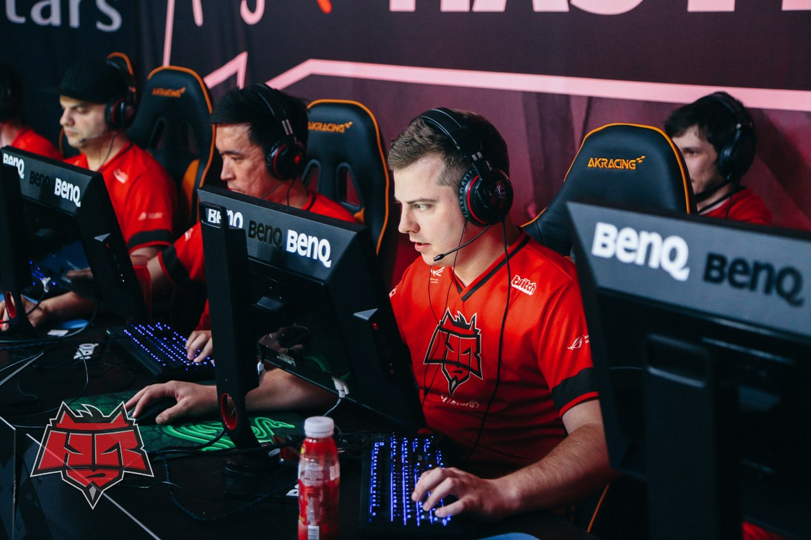

Итак, сейчас 5:25 утра по Киеву 14 Июля 2015 года. У меня в наушниках играет "Linkin Park – Roads Untraveled".
Ну что ж, погнали…
Я пришел в команду в мае, как раз перед турниром Dreamhack France. До старта оставалось всего 5 дней, и в тот момент мы выжали из него действительно максимум. Дальше началась рутинная работа и вливание в нынешний мир CS. Таким, как я помнил его играя, тренируя и будучи менеджером, он быть уже не может. В момент, когда мы начали совместную работу, параллельно шло, внимание, 7 онлайн-лиг, и формат в большинстве из них был best-of-three. Подведу небольшой итог двух месяцев.
За пару месяцев, включая ланы, мы отыграли приблизительно 150 официальных матчей. Тут не нужно быть математиком, чтобы понять, что в день мы играли 2-3 официальных матча (bo1, bo2, bo3). Для тех, кто работает не в офисах, а где либо на предприятиях, либо даже просто таксистом, поясню, что профессиональному игроку, несмотря на то, что это его работа, 8 из 12 часов в день, которые он проводит на рабочем месте, нужно находиться в предельной концентрации, не допуская ошибок. Всё потому, что каждая из них стоит ваших эмоций, наших побед и, в конце концов, заработка в частности. Кто нибудь из вас пробовал находиться, скажем, за рулем 12 часов в сутки 6-7 дней в неделю. Если нет и есть такая возможность — попробуйте. Возможно вы и больше времени проводите за компьютером, но разница в том, что на вас не висит ни груза ответственности, ни любых других факторов, которые существуют у профессиональных игроков. Вы можете позволить себе намного больше вольностей, отдыха и так далее. Заложниками этой ситуации оказались не только мы, а и абсолютно все команды из топ-12. Наверное, поэтому время от времени абсолютно все команды проигрывают матчи. Наш средний винрейт за все последнее время составил около 55% процентов, что, поверьте мне, играя с теми оппонентами, с которыми мы играем, очень даже неплохо. Да, у fnatic и TSM он превышает 65% и поэтому они и являются топ-1.

За все это время мы играли все 7 карт. Естественно, выбирали приоритетные карты и делали их своими сильными.
Не хочу писать о рутинных вещах, поэтому выделю, пожалуй, самые приоритетные из них, а именно Fragbite Masters 4 и ESL ESEA Pro League.
Лично я поставил перед нами задачу выйти на LAN-финалы Fragbite Masters 4, при том, что в турнире из топовых команд не играли только Ninjas in Pyjamas. Задачу мы выполнили, но на LAN-финалах нам действительно не хватило, как бы смешно это не звучало, опыта игры LAN-турниров в этом составе. Готовились мы, к сожалению, 4+1, так как mou нужно было делать визу в Швецию (у всей старой гвардии стояли «мультики» на год или два). Мы, казалось бы, приехали действительно в хорошей форме с весьма удобным маппулом против тех команд, которые там были, и не смогли «закрыть» свою карту с Team Solomid. Третьей картой был бы train, где мы в тот момент были очень серьезно готовы конкретно к игре с TSM. Я не могу сказать, что мы сделали какие-то серьезные выводы после того турнира, потому что на них просто не было времени, но некоторые вещи мы все-таки намотали на ус. После этого в команде случились серьезные проблемы, которых практически невозможно было избежать.
Еще при вылете в Швецию Миша оплатил штраф в нашем аэропорту и мы уже знали, что из Стокгольма он летит в Москву, так как при нынешнем законодательстве сделать вид на жительство в Украине — не щелкнуть пальцем. Мы знали, что ему придется провести 3 месяца не с нами, а игры на разных лигах, в числе которых был и ESL, продолжались.
В момент, когда Миша оказался в Москве, а мы чуток подавленные этим фактом вернулись в Киев, нас ждал марафон мачтей на ESL ESEA Pro League, которые мы перенесли. Это были 10 матчей за 3 дня, а если говорить проще, то полсезона. Возможно вы знаете, возможно нет, но на ESL карты выбираются случайным образом в начале сезона. Когда изначально мы увидели маппул против наших соперников, мы вообще ужаснулись. Если вы следите за CS:GO, то поймете эту картину. Нам предстояло сыграть с fnatic два раза overpass, с mouz два раза dust2, с Titan два раза inferno, с TSM mirage, с Virtus.pro mirage, с Ninjas in Pyjamas dust2, с PENTA Sports cache, с Natus Vincere inferno и cobblestone. В общем, маппик был настолько мрачным, что мы вообще, если честно, не питали надежд на эту лигу, но твердо решили, что будем бороться во что бы то ни стало.
Когда мы вернулись с Fragbite Masters 4, наши статистики были неутешительными, мы имели 4 победы и 6 поражений. Однако у нас был реальный шанс выйти на LAN. Сейчас опишу задачу, которая оставалась для выхода. Нам нужно было фактически проиграть максимум одну карту из 12 оставшихся, обыграв при этом 2:0 Natus Vincere, 2:0 Virtus.pro, сыграть 1:1 с TSM, обыграть fnatic, Titan, PENTA Sports и mousesports, которые уже в тот момент набрали обороты опять же на злополучном dust2.

HellRaisers [14:16]  EnVyUs @overpass
EnVyUs @overpass
Я напишу это не в укор игрокам, но каждый помнит промах mou в спину с пингом 120 при счете 14:13 в нашу пользу. Это к тому, что каждый этот момент мы переживаем и вспоминаем по-своему тяжело и больно.
HellRaisers [12:16]  mousesports @dust2
mousesports @dust2
HellRaisers [14:16] Titan @inferno
HellRaisers [16:11]  Flipsid3 @cobblestone
Flipsid3 @cobblestone
HellRaisers [13:16]  Dignitas @train
Dignitas @train
Если кто-то забыл, то в этом матче при счете 13:14 (мы за КТ) Pimp умудрился взять раунд 1 в 4 на закрытом пленте, при том я бы сказал, что мы просто подарили этот раунд, а вместе с ним и 3 очка команде Dignitas.
HellRaisers [16:13]  Ninjas in Pyjamas @cache
Ninjas in Pyjamas @cache
HellRaisers [19:16] Ninjas in Pyjamas @dust2
HellRaisers [16:9] mousesports @dust2
HellRaisers [4:16] fnatic @overpass
HellRaisers [3:16] EnVyUs @train
День первый: у нас было 4 матча, без победы в которых ловить в этой лиге было попросту нечего. Но с задачей, хоть и не без историй, мы справились на «ура».
HellRaisers [16:8] Flipsid3 @train
HellRaisers [16:5] Dignitas @cache
HellRaisers [16:14] PENTA @mirage
HellRaisers [16:10] PENTA @cache
День второй: мы знали, что нас ждет в этот день. Я проснулся с какой-то тревогой и волнением, которые мне в принципе не свойственны. Я действительно волновался и переживал как 10 лет назад, играя свои первые зарубежные турниры... Зайдя в наш «прак-рум», первыми моими словами было: «Парни, мы выиграем сегодня». Эмиль сказал что-то из серии: «Хотелось бы, но каким образом?». Я ответил просто: «Делай свою работу и верь мне. Да, мы сможем обыграть Natus Vincere на cobblestone и я знаю как это сделать, и, да, мы «унесем» сегодня fnatic на overpass».
HellRaisers [16:10] Natus Vincere @cobblestone
В этой игре мы взяли свое нужное количество раундов за КТ, а за атаку ну уж очень серьезный ключевой раунд взял капитан команды. Вы можете лицезреть, я бы так сказал, это происшествие:
День начался как нельзя лучше. Первый шаг мы сделали. Каждая победа в этой лиге не значила бы ничего без следующей, как и каждое поражение в матче слишком сильно усугубляло бы положение и следующие победы могли бы уже ничего не значить.
HellRaisers [16:7] fnatic @overpass
Мы были готовы еще к первому матчу с fnatic на overpass, но нас подвела техника mou, который в тот момент был в Казахстане — при апдейте клиента у него полетела винда. Во всех ситуациях до этого организаторы переносили матчи, но нас это не коснулось почему-то. Ладно, забудем об этом. Как я уже сказал, мы были готовы, действительно готовы, и, играя, даже сами игроки говорили, что как же легко играть, когда ты просто знаешь, что к тебе сюда сейчас придет моделька, которую ты убьешь в ухо. Я не скажу, что победа была легкой, но и трудностей в этой игре действительно не было.
HellRaisers [16:10] Titan @inferno
Тут была похожая ситуация, как и с fnatic. Мы настолько хорошо изучили игру оппонента, что взяв всего 7 или 8 раундов за КТ, за атаку просто уничтожили соперника, не используя ни одного заготовленного раунда.
HellRaisers [17:19] Team Solomid @mirage
Об этой игре напишу чуть больше. За 4 дня до этого матча мы проиграли TSM на Fragbite Masters со счетом 1:14 за атаку на мираже и, собственно, сделали выводы. Я не смотрел записи других игр, я просто посмотрел каким образом эти ребята нас так «убили». Да, это их лучшая карта и да, это наша худшая карта, но в Швеции из 10 девайсных раундов 9 мы отыграли 4 в 5, так как AWP соперника, а именно karrigan, находил энтри-килл в любой части карты.
Мы полностью убрали этого человека с карты, выиграв 10:5 за атаку, что является вообще космическим результатом в игре против этой команды на любой карте, а тем более на mirage. Дальше начались реальные проблемы и отсутствие опыта карты, даже не опыта, а банальной практики, на которую времени просто нет. Но! У нас было 2 матчпоинта, где мы обязаны были закрыть игру. В том фатальном раунде, где мы знали, что у них мало гранат, мы со старта остались 5 в 3 и допустили грубейшую позиционную ошибку. Я не буду называть имен, но виновники в курсе, что они сделали, хоть сначала они и не признали своей ошибки.
День, к сожалению, закончился «ляпом», а сказка была так близко…
Заключительные 4 матча.
HellRaisers [19:22]  Virtus.pro @mirage
Virtus.pro @mirage
HellRaisers [19:16] Natus Vincere @inferno
HellRaisers [12:16] Team SoloMid @cbble
HellRaisers [12:16] Virtus.pro @inferno
Проиграв mirage Virtus.pro, имея 8 матчпоинтов уже в атаке на этот раз, мы знали, что шансы наши уже призрачны. Даже если бы мы выиграли все матчи, то от нас практически ничего не зависело бы, так как прямыми конкурентами были именно Virtus.pro, Team Solomid и Natus Vincere.
Мы смогли обыграть Natus Vincere в непростом матче на inferno, но не забрали очки у Team Solomid на cobblestone, хотя могли. И, к огромному сожалению, не обыграли Virtus.pro, так как Мишу при счете 12:13 просто задэдосили.
Мы заняли шестое место в европейском дивизионе, что, поверьте мне, очень серьезный результат. Теперь обратите внимание на счета, дорогие фанаты, ну и те люди, которые пишут гадости тоже. Скажите, что эта команда хоть где-то дала слабину или не боролась. Мы проиграли с разгромом лишь 1 матч против Team EnVyUs за весь сезон. Матч с fnatic команда играла 4 в 5 с Владой.
По итогам этого всего могу сказать, что мы являемся конкурентоспособной командой, которая, может быть, пока что нестабильна, но в хороший день способна обыграть любого соперника.
Дальше был Starladder со стенд-ином. Сам турнир, конечно, был приятен и хорош, да и было приятно посмотреть на GPlay, но для нас этот турнир оказался, к сожалению, не просто холодным душем, а ужасающей реалией того, что все, над чем мы работали, пришлось просто «выкинуть в топку».
Сразу после турнира все уехали по домам. Мы делали визы и просто чуток отдыхали, так как за 2 месяца я могу насчитать около 8 выходных дней в сумме.
Проблемы не перестают нас покидать. Сегодня начинается наш путь и подготовка к «мажору», но Миша находится в Уфе. Благо, с организованным рабочим местом. Спасибо организации за это, ну и Мишке за понимание и его настрой. К сожалению, на старте нашего, так называемого, буткемпа 4+1, mou сразу пришлось вернуться в Казахстан, чтобы вновь попытаться получить визу, так как в первом случае он получил отказ.

Но даже все эти трудности никоим образом не влияют на наш настрой. Команда будет работать с 13:00-14:00 до 2 ночи, и мы действительно будем серьезно готовиться. Также хочу отметить целеустремленность некоторых людей в этой команде, а именно Эмиля, который, дабы набрать форму, уже полторы недели играет с 11:00-12:00 до 2 ночи. Такие вещи вдохновляют не только меня, но и тиммейтов. Спасибо тебе, Эмиль. Меня действительно очень радует отношение людей к процессу. Очень порадовал приехавший Даур, сразу выяснивший весь график (сколько ему спать, во сколько вставать, что делать и над чем работать). Кирилла и Миши это вообще не касается, так как эти ребята всегда на одной волне. Они всегда понимают и хотят работать. К сожалению, весь груз и все трудности легли на молодого игрока, который летает туда-сюда, мучаясь с часовыми поясами. Он играет с пингом 120, с огромным трудом выполняя свою задачу в игре. Мне действительно обидно, что человек с таким желанием и потенциалом вынужден терпеть такие неудачи и фактически лишать себя возможности серьезно готовиться к главному турниру в его жизни на данный момент.
Также я очень благодарен всем людям, которые нас поддерживают. Спасибо как фанатам, так и семьям, женам, детям и организации, которые во что бы то ни стало остаются верны нам и нашим начинаниям.
Болейте за HellRaisers!
Комментарии (5)